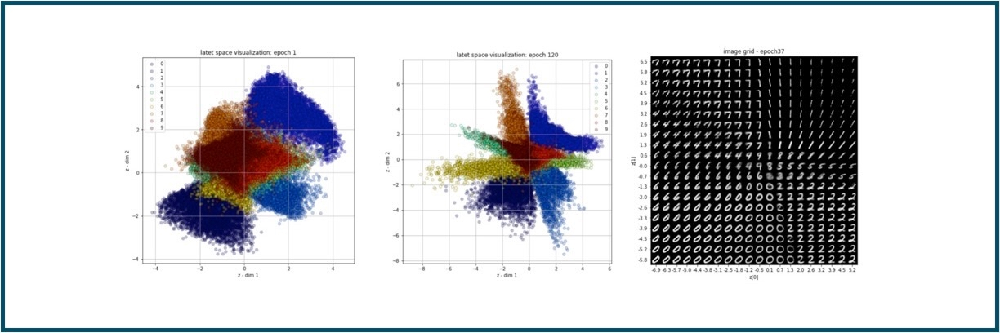

Variational Autoencoder on MNIST
Auto-Encoding Variational Bayes, implemented and trained on handwritten digits: an encoder that outputs a distribution instead of a point, a decoder that draws digits from it, and a training objective with a closed-form KL term.
- Variational inference
- Neural Networks & Deep Learning course
- University of Tehran · 2020
- Keras · MNIST · EfficientNet bonus

The latent space, as it trains
The reparameterisation trick
Sample z = μ + σ·ε and watch the KL term
InteractiveThe encoder outputs μ and σ for one latent dimension. Sampling is moved into ε ~ N(0,1), so gradients can flow through μ and σ. The KL term measures how far q(z|x) = N(μ, σ²) is from the prior N(0, 1).
The two loss terms pull in opposite directions. Reconstruction wants each digit's σ tiny and its μ far from the others, so it can be decoded exactly. The KL term wants every q(z|x) to look like the prior. The compromise is the dense, continuous space in the animations above, which is what lets you decode any point into a plausible digit.
The same model at a larger scale, trained on celebrity faces, is on the VAE Faces page.